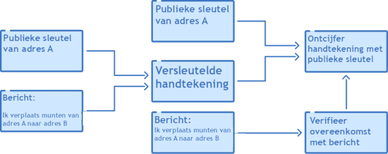
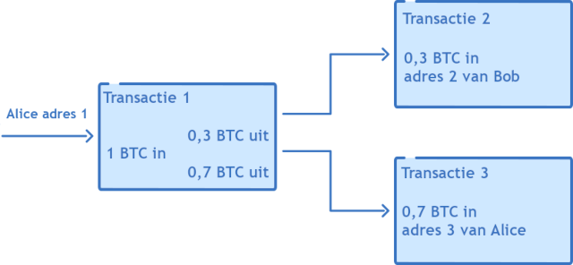

8 Accounts zonder identiteit
We hebben nu een gedistribueerd grootboek gebouwd zonder centrale autoriteit, een loterij om te bepalen wie erin mag schrijven, een systeem om eerlijke miners te belonen en valsspelers te straffen, een manier om de moeilijkheidsgraad aan te passen om een consistent uitgifteschema te garanderen en conflicten te verminderen en een systeem om de geldigheid van de keten te controleren door te kijken naar het cumulatieve proof-of-work en de transactiegeschiedenis.
Laten we nu eens kijken naar identiteit. Om in een traditioneel banksysteem geld te versturen moet je eerst jezelf identificeren bij de bank. Je geeft je identiteit (je bankpas) en pincode in bij de geldautomaat, of typt je gebruikersnaam en wachtwoord in een mobiele app. De bank zorgt ervoor dat entiteiten niet dezelfde identiteit delen.
Hoe kunnen we in ons nieuwe op bitcoin gebaseerde financiële systeem een rekening openen zonder een centrale partij die de identiteiten bijhoudt? Hoe kunnen we onze identiteit loskoppelen van financiële transacties, zodat identiteitsdiefstal voorkomen wordt en we niemand hoeven te vertrouwen met onze informatie? Hoe zorgen we ervoor dat wanneer Alice aankondigt Bob te willen betalen, we kunnen garanderen dat zij het echt is en dat ze de bevoegdheid heeft om dat geld te verplaatsen?
8.1 Een bitcoinrekening aanmaken
In ons systeem bestaat geen centrale tussenpersoon (zoals een bank) om alle rekeninghouders te registreren. Wat als we iedereen zijn eigen gebruikersnaam en wachtwoord laten kiezen? Doorgaans controleert een bank of een gebruikersnaam al bestaat, maar dat is in ons geval onmogelijk aangezien er geen centrale partij is om nieuwe identiteiten uit te geven. Een gebruikersnaam en wachtwoord zijn in ons geval niet voldoende. We zullen opnieuw een techniek moeten gebruiken die we al kennen uit eerdere hoofdstukken, namelijk gigantische willekeurige getallen.
Door grote willekeurige getallen te genereren, kan iedereen loten kopen om mee te spelen met de loterij. We kunnen hetzelfde doen om rekeningen aan te maken. Om een bitcoinrekening, of adres, aan te maken, zullen we eerst twee 256-bits getallen genereren die wiskundig aan elkaar gekoppeld zijn — een publiek/privé-sleutelpaar. Herinner dat een 256-bits getal ongeveer even groot is als het aantal atomen in het heelal, dus twee mensen die per ongeluk hetzelfde sleutelpaar genereren is haast onmogelijk. We geven ons adres aan iedereen die ons geld wil sturen. We gebruiken de privésleutel om het geld weer uit te geven. Dit is hoe het werkt.
Versleuteling is een methode om leesbare tekst om te zetten naar geheimschrift, zodat alleen iemand die de sleutel heeft het originele bericht kan lezen door de versleuteling weer ongedaan te maken. Als kinderen speelden sommigen van ons al met speelgoed waar een enkele sleutel nodig was om een bericht in wartaal te veranderen, om het even later met dezelfde sleutel weer te ontsleutelen. Dit soort codering wordt symmetrisch genoemd. Een systeem met een publiek/privé-sleutelpaar is asymmetrisch, omdat je met de ene sleutel kunt versleutelen en de andere moet gebruiken om weer te ontsleutelen.
De publieke sleutel kan je naar believen met de hele wereld delen. Mensen die je berichten willen sturen kunnen ze versleutelen met je publieke sleutel, en omdat alleen jij de privésleutel bezit, ben jij de enige die de berichten kan decoderen.
Laten we eens kijken hoe Alice munten naar Bob stuurt. Om een transactie te ontvangen genereert Bob een sleutelpaar en houdt hij zijn privésleutel geheim. Hij genereert een adres; een lange reeks van cijfers en letters op basis van een hash van zijn publieke sleutel. Bob deelt dit adres vervolgens met Alice.
Vergelijk dit adres met een brievenbus. In plaats van brieven kan Alice munten in deze brievenbus laten vallen. Maar alleen Bob heeft de privésleutel die nodig is om de brievenbus te openen en de munten te besteden.
Wanneer je geld op de bank zet, geef je ze je gebruikersnaam en wachtwoord. Wanneer je cheques uitschrijft, onderteken je met je naam om te verifiëren dat jij het bent die de cheque uitschrijft. Wanneer je bitcoins wilt verplaatsen, toon je bewijs dat je de sleutel bezit van het adres waar de munten bij horen.
Alice moet bewijzen dat ze de privésleutel van haar publieke sleutel heeft. Ze wil haar privésleutel echter niet blootstellen aan hackers omdat ze dan haar munten uit haar brievenbus kunnen stelen.
Alice’s bewijs van sleutelbezit wordt een digitale handtekening genoemd. Alice construeert een transactie die er ongeveer zo uit ziet:
Adres 12345 met 2,5 bitcoins
verstuurt 2 bitcoins naar adres 56789 en
stuurt 0.5 bitcoins terug naar adres 12345In werkelijkheid zijn de adressen gigantische 160-bits getallen. Zij versleutelt vervolgens dezelfde transactie met haar privésleutel en genereert daarmee een digitale handtekening.
Wanneer ze haar transactie publiceert naar de andere nodes op het netwerk, onthult ze de publieke sleutel van de brievenbus van waaruit ze verzendt, en de digitale handtekening die ze met haar privésleutel heeft gegenereert. Alice kondigt het volgende aan:
Ik stuur munten vanaf adres 12345
Hier is de publieke sleutel voor adres 12345. Je zult zien dat als je de publieke sleutel hasht, je hetzelfde adres zult verkrijgen.
Hier is een handtekening die ik heb versleuteld met de privésleutel die correspondeert met dit adres. Je kunt de publieke sleutel gebruiken om deze te ontsleutelen en controleren of het overeenkomt met mijn transactiedata.

Aangezien iedereen nu de publieke sleutel van de brievenbus van Alice heeft, kan de digitale handtekening eenvoudig worden ontsleuteld. Als de handtekening kan worden ontsleuteld met de publieke sleutel van het adres, weet iedereen dat Alice in het bezit moet zijn van de bijbehorende privésleutel. Ontsleutelen was anders niet mogelijk geweest, omdat de publieke sleutel alleen berichten kan ontsleutelen die zijn versleuteld met de bijbehorende privésleutel. Het is belangrijk om hierbij op te merken dat niemand haar privésleutel heeft gezien, maar wél het bewijs dat ze over de juiste privésleutel beschikt om haar handtekening te zetten.
In tegenstelling tot je pincode of een handtekening op een cheque, is een digitale handtekening specifiek voor de unieke transactiegegevens die je ondertekend. De handtekening kan dus niet worden gestolen en opnieuw worden gebruikt voor een andere transactie. Elke transactie krijgt een andere handtekening, zelfs als deze wordt verzonden vanaf de hetzelfde publieke adres, met dezelfde privésleutel, aangezien alle nieuwe gegevens de handtekening wijzigen.
8.2 Kan je een privésleutel raden?
Laten we eens kijken hoe groot de kans is om een privésleutel te raden, wat je de mogelijkheid zou geven om munten te verplaatsen van het bijbehorende publieke adres. Onthoud dat een sleutel uit 256-bits bestaat. Elke bit heeft slechts twee waarden (een of nul). Dat betekent dat je elk bit kunt visualiseren als het opgooien van een muntje.
Een privésleutel van 1 bit is alsof we een munt opgooien. Kop of munt, één of nul? Je hebt een kans van één op twee om het goed te raden.
Basis statistiek: de kans op verschillende gebeurtenissen wordt berekend door de individuele kans van elke gebeurtenis met elkaar te vermenigvuldigen. Als een munt \(1/2\) kans heeft om kop te landen, dan is de kans om twee keer op rij kop te gooien \(1/2 \times 1/2 = 1/4\) of 1 op 4.
Als je de uitkomst van 8 munten op een rij zou moeten raden is dat \(2^{8}\); een kans van één op 256.
Een kentekenplaat heeft 6 letters en cijfers. Er zijn 26 letters en 10 cijfers, dus in totaal 36 tekens. Het aantal mogelijke kentekenplaten is dus \(36^{6}\), en je kans om de mijne te raden is dus een op de twee miljard.1
Een kredietkaart bestaat uit zestien cijfers. Ieder cijfer heeft 10 verschillende mogelijkheden, dus je kans om mijn kredietkaart te raden is \(10^{16}\), dat is één op 10.000.000.000.000.000 of ongeveer één op tien quadriljoen.
Er zijn ongeveer \(10^{50}\) atomen op aarde. Als ik aan een willekeurig atoom denk, is jouw kans om die te raden ongeveer
Één op 1.000.000.000.000.000.000.000.000.
000.000.000.000.000.000.000.000.000.Een privésleutel heeft 256 bits, wat gelijk is aan \(2^{256}\) of ongeveer \(10^{77}\). En daarmee is de kans om mijn volledige privésleutel correct te raden kleiner dan de kans op het raden van een specifiek atoom in het universum, of de kans om 10 keer achter elkaar de jackpot van de Staatsloterij te winnen.
Maar wat nou als een super krachtige computer al het gokwerk voor je zou kunnen doen? Dit wordt het best uiteengezet in de Redditpost op https://bit.ly/2Dbw9Qd en ik raad het je aan om hem in zijn volledigheid te lezen. Hij is wellicht wat technisch, maar de laatste paragraaf geeft je een goed beeld wat er voor nodig is om alle mogelijke 256-bits sleutels te noteren:
Dus, als je de volledige planeet als harde schijf zou kunnen gebruiken, 1 byte per atoom zou kunnen opslaan, de sterren gebruikt als brandstof om je langs 1000 miljard sleutels te fietsen, dan heb je 37 octiljoen (\(10^{48}\)) keer de aarde nodig voor opslag, en 237 miljard keer de zon om je apparaat van brandstof te voorzien, waar je alles te samen 3.6717 octodeciljoen (\(10^{57}\)) over zult doen
— u/PSBlake, R/Bitcoin
Het is dus praktisch onmogelijk om iemands privésleutel te raden. Dat niet alleen; het aantal mogelijke bitcoinadressen is zo groot, dat het aan te raden is om voor iedere transactie een nieuw adres met een nieuwe privésleutel te genereren. Dus in plaats van een enkele bankrekening, zou je zo maar eens over duizenden of zelfs miljoenen bitcoin accounts kunnen beschikken. Namelijk 1 voor iedere transactie die je ooit hebt ontvangen.
Het is misschien verontrustend dat je bitcoin account slechts beveiligd is door toeval, maar hopelijk helpt de verklaring hierboven je om te beseffen dat dit vele malen veiliger is dan de pincode tot je bankrekening, opgeslagen op een centrale server, en een eenvoudig doel voor hackers.
8.3 Het saldo monitoren
Het wordt tijd om een laatste leugentje van de voorgaande hoofdstukken te corrigeren. Er worden namelijk geen saldi bijgehouden op de blockchain. In plaats daarvan maakt bitcoin gebruik van zogeheten UTXO: Unspent Transaction Outputs. De transactie output is simpelweg een woord voor de muten die je in een vorige transactie hebt ontvangen, ongeacht of je ze van iemand ontvangen hebt of door het minen hebt verkregen in de coinbase transactie.
Bitcoins zijn deelbaar in 100 miljoen eenheden die we satoshis noemen. Dit in tegenstelling tot de metalen munten die vaak alleen in vooraf gespecificeerde eenheden voorkomen, zoals we bijvoorbeeld de 10 cent, twintig cent en euro muntstukken kennen. Daarom zul je soms munten van verschillende adressen met elkaar moeten combineren, of juist een grotere UTXO in tweeën moeten splitsen, om ze naar iemand anders te sturen. Zie het als het sturen van een stapel munten naar een machine die ze omsmelten en nieuwe munten maken van elke waarde die u wilt. Portefeuilles, die later in dit hoofdstuk worden besproken, beheren dit over het algemeen allemaal achter de schermen, zodat u alleen het bedrag hoeft op te geven dat u wilt verzenden.
Laten we zeggen dat Alice een adres heeft dat 1 bitcoin bevat. Ze wil 0,3 bitcoins naar Bob sturen. Ze genereert een transactie die haar adres toont met een 1 bitcoin UTXO als input en twee outputs: een nieuwe bitcoin UTXO ter waarde van 0.3 naar Bob’s adres, en een nieuwe bitcoin UTXO ter waarde van 0.7 terug naar haar eigen adres als wisselgeld. Het wisselgeld kan naar haar oorspronkelijke verzendadres gaan, of voor een betere privacy kan ze het naar een nieuw adres sturen dat ze ter plekke genereert.

Er is geen manier in de keten om te vertellen wie welk adres controleert. Daarvoor zou je de corresponderende private sleutels moeten kennen en ze moeten koppelen aan echte identiteiten. Het UTXO-model moedigt een zeer mooi privacymechanisme aan door bij elke muntverplaatsing het wisselgeld naar een nieuw adres te sturen. Zo kan een persoon honderden of duizenden adressen bezitten als hij vele malen munten heeft verzonden of ontvangen. De software van de portemonnee beheert dit alles voor ons, zodat we ons geen zorgen hoeven te maken over de details.
Dus, om het saldo van een bepaald adres te controleren, moeten we eigenlijk alle UTXO’s optellen die dit adres als uitgang hebben. De totale set van huidige UTXO’s in bitcoin groeit wanneer mensen van één adres naar veel adressen sturen, en krimpt wanneer mensen consolidatietransacties uitvoeren waarbij munten van veel adressen aan één adres worden uitgegeven.
Het UTXO-model maakt een eenvoudige en efficiënte validatie van dubbele uitgaven mogelijk, omdat een bepaalde UTXO maar één keer kan worden uitgegeven. Wij hoeven niet de hele geschiedenis van uitgaven van een bepaalde rekening te kennen.
We kunnen ook een willekeurig aantal UTXO’s tegelijk creëren en vernietigen, waardoor complexe transacties ontstaan die verschillende inputs en outputs mixen. Dit maakt het idee van CoinJoin2 mogelijk, waarbij verschillende partijen deelnemen aan een enkele bitcoin-transactie die een willekeurig aantal inputs mengt om een willekeurig aantal outputs te produceren, en zo de geschiedenis van de UTXO’s versluiert. De populariteit van dergelijke technieken neemt toe en is belangrijk voor de privacy en fungibiliteit, een term die zegt dat elke bitcoin gelijkwaardig is aan elke andere bitcoin. Op die manier, als sommige bitcoins in de handen van onfrisse partijen terechtkomen, zijn ze niet voor eeuwig bezoedeld alleen maar omdat ze een keer voor iets snode zijn gebruikt.
8.4 Wallets
Een account aanmaken is niets meer dan een willekeurig 256 bit sleutelpaar aanmaken. We kunnen duizenden of miljoenen accounts aanmaken, dus hebben we een manier nodig om ze te traceren. In bitcoin wordt het woord portemonnee gebruikt om te verwijzen naar elk soort apparaat dat uw sleutels bijhoudt. Dat kan zo simpel zijn als een stuk papier of zo complex als een stuk hardware.
De originele bitcoin-code die door Satoshi werd gepubliceerd, werd geleverd met een software-portemonnee. Deze portemonnee genereerde uw adressen voor u, sloeg uw sleutels op en selecteerde UTXO’s voor u om uit te geven, zodat u gemakkelijk bitcoins van elke waarde kon versturen.
In tegenstelling tot de portemonnee van uw bank, die meestal de vorm heeft van een mobiele of webapplicatie die door uw bank is gemaakt, is bitcoin een volledig open systeem. Daarom zijn er tientallen portemonnees, waarvan de meeste gratis zijn, en veel ook open source, evenals een half dozijn implementaties van hardware-portemonnees en er komen er nog meer. Iedereen met kennis van computerprogrammering kan zijn eigen portemonnee bouwen of de code van een open source portemonnee lezen om er zeker van te zijn dat er niets vals aan de hand is.
Omdat je private key het enige is dat je nodig hebt om je munten uit te geven, moet je die goed bewaken. Als iemand uw kredietkaart steelt, kunt u het bedrijf bellen en een fraudeklacht indienen en proberen uw geld terug te krijgen. Bij bitcoin is er geen tussenpersoon. Als iemand uw privésleutel heeft, heeft hij uw munten in handen, en er is niemand die u kunt bellen.
Prive-sleutels zijn ook gevoelig voor verlies. Als u uw portemonnee op uw computer bewaart en de computer wordt gestolen of vliegt in brand, dan heeft u een probleem. Als u de beste bitcoin-praktijken volgt en elke keer dat u betalingen ontvangt een nieuw adres genereert, wordt het veilig opslaan en back-uppen van deze privésleutels al snel een lastige zaak.
In de loop der tijd heeft het bitcoin-ecosysteem een aantal oplossingen voor dit probleem ontwikkeld. In 2012 werd BIP32 (Bitcoin Improvement Proposal, een mechanisme voor mensen om ideeën te verspreiden over hoe bitcoin verbeterd kan worden) voorgesteld om Hierarchical Deterministic Wallets te maken. Het idee hierachter is dat we met slechts één willekeurig getal, een se d genaamd, continu vele sleutelparen kunnen genereren die bitcoinadressen en privésleutels voor hen vertegenwoordigen.
Als u tegenwoordig een van de algemeen beschikbare software- of hardware-portemonnees gebruikt, genereert deze automatisch nieuwe sleutels voor u voor elke transactie, zodat u slechts één hoofdsleutel hoeft te back-uppen.
In 2013 kwam BIP39 om het back-uppen van sleutels nog eenvoudiger te maken. In plaats van een willekeurig getal te gebruiken, zouden sleutels worden gegenereerd uit een willekeurige set van door mensen leesbare woorden. Hier is een voorbeeld van een seed:
witch collapse practice feed
shame open despair creek
road again ice leastMet deze methode werd het back-uppen van sleutels heel eenvoudig: je kon het zaad op een stuk papier schrijven en het in een kluisje stoppen. Je zou de zin zelfs uit je hoofd kunnen leren en uit een falend economisch regime als Venezuela weg kunnen lopen zonder iets bij je te hebben, zonder dat iemand er iets van merkt dat je je rijkdom in je hoofd meedraagt.
Bovendien kan een bitcoin-adres meer dan één privé-sleutel vereisen om toegang te krijgen. Adressen met verschillende handtekeningen of multisig-adressen kunnen een grote verscheidenheid aan beveiligingssystemen gebruiken. Twee mensen kunnen bijvoorbeeld een rekening delen met 1-of-2 multisig, waarbij elke partij kan tekenen voor transacties en munten kan uitgeven.
Een 2-of-2 multisig die vereist dat beide partijen sleutels leveren om uit te geven kan worden gebruikt om te voorkomen dat een enkele persoon controle krijgt over een rekening, bijvoorbeeld tussen zakenpartners.
Je kunt een eenvoudig escrow-systeem maken met een 2-van-3 multisig. De koper krijgt een sleutel, de verkoper krijgt een andere sleutel, en een derde sleutel wordt aan een arbiter gegeven. Als koper en verkoper het eens zijn, kunnen ze samen de fondsen deblokkeren. In het geval van een geschil kan de arbiter samen met een van de partijen optreden om de fondsen te deblokkeren.
U kunt een 3-of-5 multisig schema gebruiken om uzelf te beschermen tegen het verlies van sleutels door uzelf toe te staan maximaal 2 van de 5 sleutels te verliezen en nog steeds in staat te zijn de rekening te deblokkeren. U kunt twee van de sleutels op verschillende plaatsen bewaren, twee bij verschillende betrouwbare vrienden die elkaar niet kennen, en één bij een gespecialiseerde bewaardienst zoals BitGo die uw transacties mede ondertekent, waardoor uw bitcoin zeer moeilijk te stelen is terwijl u uzelf beschermt tegen het verlies van sleutels.
U kunt zelfs nog verder gaan en adressen maken die ontgrendeld worden door vrij complexe voorwaarden met behulp van programmeerconstructies zoals voorwaardelijke verklaringen ("als dit, dan dat"). Je zou zelfs munten kunnen opsluiten in een adres dat pas over 10 jaar toegankelijk is, en zelfs jij als maker van zo’n adres kunt niet van gedachten veranderen en de code veranderen om die munten voor die tijd uit te geven.
Er komen steeds meer semi-custodiale oplossingen van bedrijven zoals Casa en Unchained Capital, die u helpen om sleutels op een veilige manier op te slaan. In tegenstelling tot een bank, die je rekening kan bevriezen, fungeren deze oplossingen voor gedeeltelijke bewaring als een back-up of vertrouwde medeondertekenaar, maar kunnen ze zelf je fondsen niet meenemen zonder je sleutels. Portefeuillesoftware evolueert voortdurend omdat daarvoor niemands toestemming nodig is, in tegenstelling tot de app van je bank. Daarom zien we steeds meer nieuwe toetreders en meer innovatie.
Dit is ingrijpend en wereldveranderend. Nooit eerder was het mogelijk om je vermogen bij je te dragen op een manier die volledig veilig is tegen inbeslagname of diefstal.
De inspiratie voor dit gedeelte kwam van een uitstekende Medium post die de waarschijnlijkheid van een aantal gebeurtenissen in detail beschrijft. Ik raad aan de volledige post te lezen voor de context: https://medium.com/@kerbleski/a-dance-with-infinity-980bd8e9a781↩︎